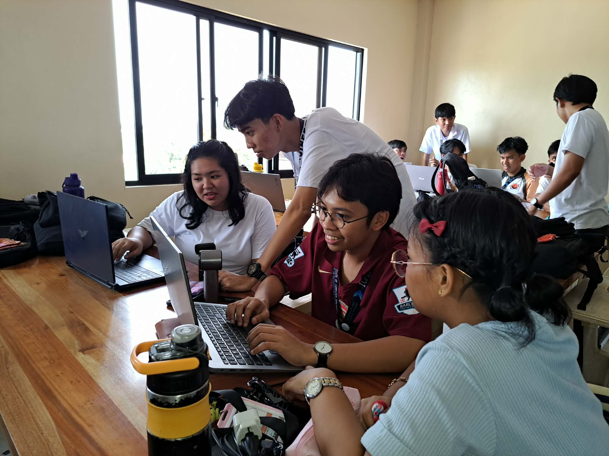

Welcome to HEALopedia!
Learn Health. Find Care. Live Better.

Welcome to HEALopedia. We are 2nd Year Computer Engineering students from Pampanga State University, Batch 2028. Our project is an informative web-based platform that enhances the health literacy and pharmaceutical knowledge of individuals in Pampanga. We aim to address the gap in understanding medical terminologies and symptoms that often leads to confusion and improper self-care decisions.
Leader
Member
Member
Member
SOURCES: MedlinePlus • Cleveland Clinic • Mayo Clinic • Healthdirect • NCBI • Healthline • News-Medical • WHO • WebMD • Merck Manuals • MSD Manuals • Medical News Today • Drugs.com